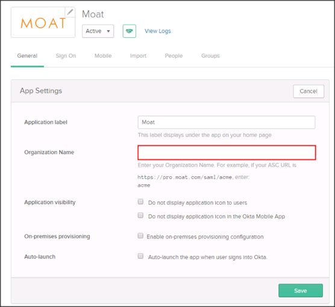

Contact the Moat Support team (saml@moat.com) and request that they enable SAML 2.0 for your account.
Include the following Metadata URL with your request:
Sign into the Okta Admin dashboard to generate this value.
The Moat Support team will process your request and will provide you with an Organization Name.
In Okta, select the General tab for the Moat app, then click Edit.
Enter the Organization Name provided by Moat into the corresponding field.
Click Save.

Done!
Notes:
SP-initiated flows and IdP-initiated flows are supported.
Just In Time (JIT) provisioning is not supported.
Go to: https://pro.moat.com/saml/[your-organization-name].